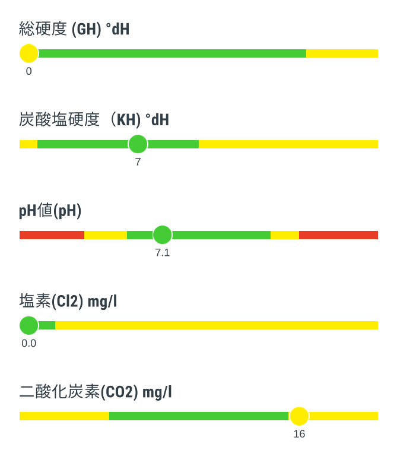
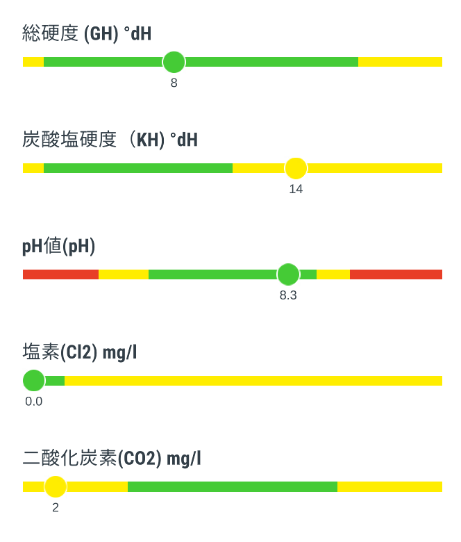

雨水補給器
晴れの日が続くと池の水が蒸発して徐々に減るため、雨水を補給できる仕組みを用意している。 実際の雨水補給は、池の水質や水温が急激に変化しないように雨の状況に合わせてその都度調整している。

- 作り方
-
- 家の雨どいにノコギリで斜め45度上向きの切れ目を入れる（ささやかな勇気がいる）
- 半分に切ったペットボトルを差し込む（台風で飛んでいかないように紐を付けておいた）
- ペットボトルの口に給水キャップを介してホースを取り付ける
- ゴミ箱に電動ドリルでホース用と塩ビ配管用の穴を開ける
- 塩ビ配管をゴミ箱に取り付ける
- ホースをゴミ箱に差し込む
- 材料
-
- ペットボトル
- 給水キャップ（百均）
- ホース（ホームセンター切売り）
- 蓋付きゴミ箱（百均）
- 塩ビ配管資材（家にあった呼び径20の資材を利用）
- 水栓エルボ
- ユニオンパッキンPP40-36x26
- Oリングゴム26
- バルブソケット
- エルボ
- パイプ
- 日頃の管理
-
- 晴れた日にはタンク（ゴミ箱）の水で外部濾過器を掃除してタンクを空にしている。
- タンクを空にするのは初期雨水（降り始めの汚れを含んだ雨水）がダイレクトに池に入らないようにとの意図だが、結局タンクに溜まった雨水が池に流れるのであまり効果は無いかもしれない。
- 小さな砂はタンクの底に沈むので、たまに掃除している。
雨水と池の水質
夏に晴れ続きで池の水が1割ぐらい減っていた状況で強い雨が降った時に、雨水と池の水質を検査した。

雨水

池（1.5時間後）
池（半日後）
| 雨水 | タンク（ゴミ箱）内の雨水（降り始めから1.5時間後） |
|---|---|
| 池（1.5時間後） | 減っていた池の水が満杯に復活したタイミングの池の水（降り始めから1.5時間後） |
| 池（半日後） | 雨水注入を続けて半日後の池の水（降り始めから半日後） |
- 雨水は二酸化炭素濃度が高いもののPH値はやや酸性よりの正常値だった。ちなみに総硬度ゼロの超軟水。
- 池（1.5時間後）は二酸化炭素濃度が低くPH値がアルカリ性寄りだった。もっと雨水を注入しても良さそうな状況。
- 池（半日後）はかなり雨水に入れ替わった様子、総硬度ゼロはヒメタニシやミナミヌマエビにとってあまり良くないかもしれない。
- 強い雨が降った時の雨水注入は3時間程度（池の水が満杯に復活して少し経過したタイミング）がちょうど良さげ。